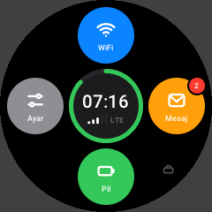
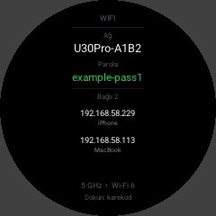
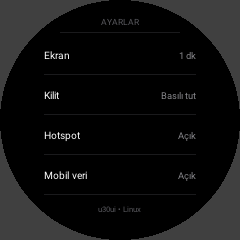
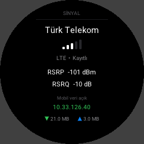
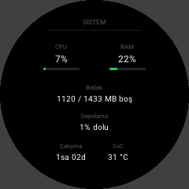
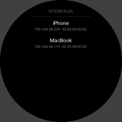
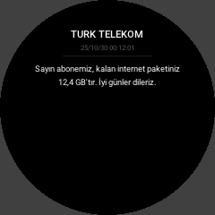

The U30 Pro, as a Linux router with its own screen
OpenWrt next to Android on the ZTE U30 Pro (MU5358, Unisoc UMS9632). Mobile data, Wi-Fi 6 hotspot, SSH over USB, and the hotspot's round screen as a light control panel that looks like its Android launcher. Android stays, and every reboot goes back to it by itself.
The sibling of MU300 Linux (ZTE F50 and U30 Air), by the same one person in Turkey.

Status: a working research port
What it already does well: a 3-hour soak with every check green (USB, network registration, mobile data, ping, Wi-Fi), no kernel oops, the NV partitions byte-for-byte unchanged and memory flat; six reboot cycles in a row with everything coming up by itself.
What works
- Mobile data (LTE)Android's own modem daemons in a chroot, as on MU300 Linux. 14-19 Mbit/s where Android did 11-12 on the same spot.
- Wi-Fi 6 hotspotAIC8800D80X2, 5 GHz, HE80, WPA2, with the board's own MAC and calibration.
- The screenA control panel in the look of the U30 launcher: status, Wi-Fi with a QR code to join, SMS, battery, settings, clients, signal, power actions, system and log. 1.5 MB, about 6 MB of RAM.
- ButtonsPower: screen on/off, held: power off. Wi-Fi key held: hotspot off/on.
- USB network and SSHPlug it into a computer:
ssh root@192.168.58.1, plus a serial console. - GPUMali-G57 with OpenGL ES 3.2, EGL 1.5 and Vulkan through Android's driver, loaded on demand.
- Android staysLinux only ever starts as a one-shot trial; reboot, power-off, a kernel oops or a failed boot all land in Android.
- Not yetSuspend and power saving, charging verified below 100 %, long battery-only runs, Bluetooth, NFC, SIM tray detection, USB OTG, calls and audio, sending SMS, OpenCL.
The screen
The U30 Pro has a round 240×240 screen and a touch panel. Under Linux it runs u30ui, written in C
straight onto the kernel's DRM: the same petals, colours and pages as the U30's Android launcher, without Android.
Locked at start (hold to open), off after a minute, on again with the power key. The pictures below are its host
preview with sample data.

Locked (hold to open) 
Status 
Wi-Fi 
Join by QR code 
SMS 
Battery 
Settings 
Signal 
Power actions 
System 
Clients 
A message, opened
One detail worth telling: the panel is mounted upside down, and turning the picture on the CPU made every moving frame tear, because the rows then reached the panel against its own scan direction. Now the panel turns the picture itself (its MADCTL register, set by a tiny kernel module) and the tearing is gone.
How it boots
Android asks for slot b, once
From rooted Android, a one-shot "try slot b" request goes into the
miscpartition.LK starts slot b
The board's own GKI 6.6 kernel, rebuilt with a small fragment, with our
init_boot_bramdisk.The ramdisk takes it back at once
It loads the vendor modules, brings up USB and puts
miscback to Android 1.6 seconds in, before anything can go wrong.OpenWrt starts
From its own region of the eMMC behind
userdata. The modem gets the NV partitions only as copies in RAM; the real NV is never written.
Slot a and the NV partitions are never written. Any reboot, power-off, kernel oops (the kernel restarts on one) or failed boot ends in Android.
Build it
For people who want to follow the work. Every step runs from a computer with Docker and adb, against a rooted U30 Pro, after a full backup.
- Back up everything:
tools/backup-full.sh OUTDIR(every partition, checked against hashes taken on the device). - Kernel:
kernel/build.shinkernel/Dockerfile's container (GKI android15-6.6 at the device's own commit, pluskernel/mu5358-linux.fragment). - Boot images:
boot/build-initboot.pymakesinit_boot_b(andboot_b) from the stock images andboot/init. - Root file system:
openwrt/build-rootfs.shfrom MU300 Linux's OpenWrt release;openwrt/customize.shmakes it this board's. - Android's files (modem daemons, firmware, GPU driver): pulled from your own device by the scripts in
modem/andgpu/. They are not in the repository.
The system as it runs (services, hardware status, known behaviour, where the logs are) is in docs/GKI-SYSTEM.md.
Questions people ask
Is it the same as MU300 Linux?
It is built on MU300 Linux's OpenWrt and its modem tools, but the U30 Pro is a different chip (UMS9632), a different Wi-Fi chip, a screen and a touch panel, and a newer Android (15) with a GKI kernel. So the kernel side, the boot path, the modem's NV handling, Wi-Fi and everything on the screen are new. MU300 Linux does not support the U30 Pro.
Can it brick my device?
The project never writes slot a or the NV partitions, and Linux is never made the default boot. Still, writing partitions on a rooted device is never without risk; that is why the first step is a full backup.
Why OpenWrt and not Ubuntu?
It is light (the whole system idles in a few dozen MB), it is a router first, and MU300 Linux's OpenWrt already brings the modem tools. Ubuntu may come later.
When will there be an installer?
After battery-only operation and charging are verified and a 24-hour soak passes. Follow the repository for news.